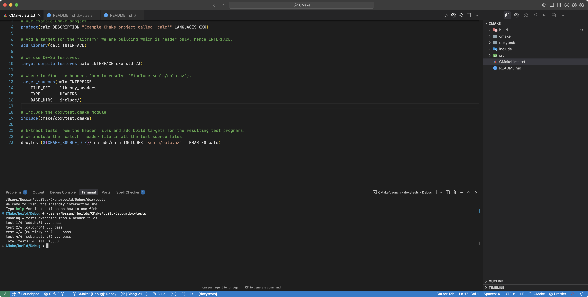
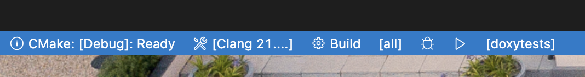
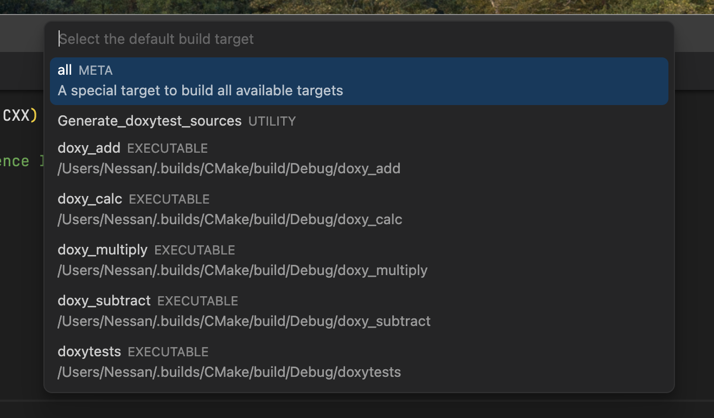
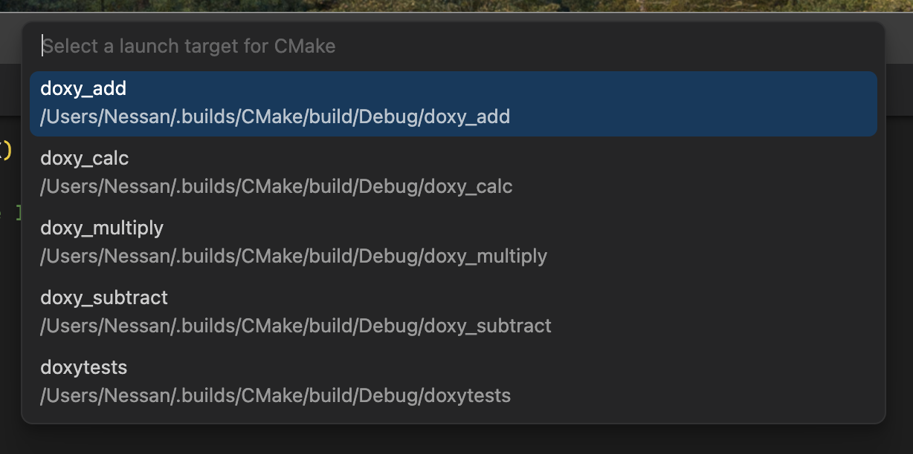

doxytest.cmake
Introduction
doxytest.cmake is a CMake module that automates the process of extracting tests from comments in header files and adding build targets for the resulting test programs. It defines a single CMake function called doxytest which is a wrapper around the doxytest.py script.
Usage
Here is an example of how to use the module in your CMakeLists.txt file to extract and then build test programs from comments in two header files, ’ include/foo.handinclude/bar.h`:
- 1
-
We are assuming that the
doxytest.cmakemodule is in the same directory as theCMakeLists.txtfile.
Thedoxytest.cmakemodule defines a single CMake function calleddoxytest. - 2
-
We are using the
doxytestfunction with all default settings.
See the Reference section for more details on the many options you can pass to this function.
Assuming everything goes well, CMake builds will generate two test source files:
doxytests/doxy_foo.cppdoxytests/doxy_bar.cpp
Note that the default output directory for the test source files is doxytests/. That script creates the directory if necessary. Also note that, by default, each test source file has a name that has a prefix (by default, doxy_) followed by the base name of the corresponding header file.
The doxy_foo.cpp source file will have an include directive for the foo.h header file, and the doxy_bar.cpp source file will have an include directive for the bar.h header file. The path to the header files is relative to the location of the test source file, so something like:
1#include "../include/project/foo.h"- 1
-
The first
..gets you up to the project root directory fromdoxytests/. The rest of the path identifies the header file.
Generally, you will want to include other header files in the test source files. You achieve this by passing the INCLUDES option to the doxytest function. You will also usually need to link the test executables to other libraries. The LIBRARIES option handles that. Those options, along with many others, are discussed in the Reference section below.
|
The function creates build targets for the test programs called:
doxy_foodoxy_bar
By default, the doxytest function also creates a third source file doxytests/doxytests.cpp with a build target called doxytests. That source file combines the tests from all the header files into a single test program.
Finally, the doxytest function creates a Generate_doxytest_sources target. Building that target forces the regeneration of the test source files.
Reference
The doxytest CMake function uses the following syntax:
doxytest(HEADER_PATH [HEADER_PATH ...]
[DOXY_DIR <dir>]
[DOXY_PREFIX <prefix>]
[INCLUDES <file1> <file2> ...]
[LIBRARIES <lib1> <lib2> ...]
[SILENT]
[DOXY_MODE <mode>]
[DOXY_COMBINED_NAME <basename>]
[DOXY_MAX_FAILS <count>]
[SCRIPT <path to the doxytest.py script>])You must specify at least one header file or directory.
If a specified path is a directory, we will scan for all header files in that directory and its subdirectories. The .h and .hpp extensions identify header files.
The following options are available:
DOXY_DIR <dir>: The directory where our script will create the test source files.DOXY_PREFIX <prefix>: The prefix for the generated test source filenames.INCLUDES <file1> <file2> ...: A list of header files to include in the generated test source files.LIBRARIES <lib1> <lib2> ...: A list of libraries to link to the test executables.DOXY_MODE <mode>: The mode to use for the generated test source files. Valid modes are:PER_HEADER: Just generate individual test files (doxy_Foo.cpp, doxy_Bar.cpp, etc.).COMBINED: Generate a single test file containing all tests (doxytests.cpp by default).BOTH: Generate both individual tests and a combined test file (this is the default).
DOXY_COMBINED_NAME <basename>: The basename for the generated combined test source file.DOXY_MAX_FAILS <count>: The maximum number of allowed test failures in a single test program before it exits.SILENT: Suppress progress messages from the script.SCRIPT <path to the doxytest.py script>: The path to thedoxytest.pyscript.
DOXY_DIR <dir>
The directory where our script will write the test source files, which by default is doxytests/
doxytest(include/foo.h DOXY_DIR tests/)This will generate test files in a top-level subdirectory called tests/. This directory is relative to the CMAKE_SOURCE_DIR.
If necessary, the script creates the directory; otherwise, the module will error out if the operation fails or if the directory is not writeable.
DOXY_PREFIX <prefix>
The prefix for the generated test source filenames. By default, a header file called Foo.h will generate a test file called doxy_Foo.cpp. You can change this by passing the DOXY_PREFIX option:
doxytest(include/foo.h DOXY_PREFIX test_)This will generate test files with the test_ prefix, so test_Foo.cpp instead of doxy_Foo.cpp.
INCLUDES <files>
You will often want to include other header files in the test source files. For example, if you are testing a library called my_lib, you may have an include-the-lot header file my_lib.h that you need for the tests to compile. Use theINCLUDES option to the doxytest function to achieve this:
doxytest(include/foo.h INCLUDES "<my_lib/my_lib.h>")This will include <my_lib/my_lib.h> in all the test source files. The INCLUDES option can be given a list of multiple header files to include.
All included headers should have header guards or a #pragma once directive to prevent multiple definitions.
|
LIBRARIES <libs>
This is another commonly used option. It allows you to specify a list of libraries to link to the test executables. For example, if you are testing a library called my_lib, you may want to link to the my_lib library in the test executables. The LIBRARIES option achieves this:
doxytest(include/foo.h LIBRARIES my_lib)This will link to the my_lib library in the test executables for the foo.h header file.
The LIBRARIES option can be given a list of multiple libraries to link to.
DOXY_MODE <mode>
This option controls the type of output from the script. By default, the doxytest function generates both individual test files and a combined test file. You can change this by passing the DOXY_MODE option to the doxytest function:
doxytest(include/foo.h DOXY_MODE PER_HEADER)This will generate individual test files only. The other valid options are COMBINED and BOTH, where BOTH is the default.
DOXY_COMBINED_NAME <basename>
This option allows you to specify the basename for the generated combined test source file. By default, the basename is doxytests. You can change this by passing the DOXY_COMBINED_NAME option to the doxytest function:
doxytest(include/foo.h DOXY_COMBINED_NAME test_all)This will generate a combined test source file called doxytests/test_all.cpp.
DOXY_MAX_FAILS <count>
This option allows you to specify the maximum number of permitted test failures in a single test program before it exits. By default, the maximum number of allowed test failures is 10. You can change this by passing the DOXY_MAX_FAILS option to the doxytest function:
doxytest(include/foo.h DOXY_MAX_FAILS 5)This will cause a test program to exit if it encounters more than 5 test failures.
SILENT
This option suppresses progress messages from the doxytest.py script. Suppressing messages is helpful if you are running the script in a CI pipeline or if you are not interested in the progress messages.
doxytest(include/foo.h SILENT)This will suppress all progress messages from the script but still show error messages.
SCRIPT <path>
This option allows you to specify the path to the doxytest.py script. By default, the script is assumed to be in the same directory as the doxytest.cmake module. You can change this by passing the SCRIPT option to the doxytest function:
doxytest(include/foo.h SCRIPT /path/to/doxytest.py)This will use the doxytest.py script located at /path/to/doxytest.py.
Dependency Tracking
The CMake doxytest function invokes the doxytest.py script with its --force and --always options. The --always option ensures that the generation of a trivial test file, even if the header file has no doctests. The --force option ensures that the test file is regenerated even if it already exists and is newer than the header file. We do this so that we can use CMake’s more sophisticated notion of dependency tracking only to invoke the script on a header file if it is completely necessary. By the way, we also added a dependency on the doxytest.py script itself. Script edits trigger the regeneration of the test source files.
Example
There is a sample CMake project using the doxytest.cmake module in the examples/CMake/ directory.
You can find it here.
That example is a simple CMake project called “calc” that uses Doxytest and CMake.
The trivial sources are header-only and can be viewed in the include/calc/ subdirectory. The cmake/ subdirectory has the doxytest.cmake CMake module as well as the doxytest.py script that extracts doctests from header files.
Here’s what it looks like when the project is open in VSCode:

The CMakeLists.txt file in the root of the project uses the doxytest.cmake module to extract the doctests from the headers in the include/calc/ directory and package them as test source code it puts in the doxytests/ directory. Targets to build and run those tests are then made available. That includes a target for a combined test program doxytests.
The CMake Tools extension for VSCode add several buttons to bottom of the editor window to build, run, and debug the project.

When you click on the “Build” target area, you see the following options:

In particular, you can see the “Generate Doxytest Sources” target that you can use to force the regeneration of the test source files.
When you click on the “Run” target area, you see the following options:

There are run targets for the individual test programs doxy_add, doxy_subtract, etc., as well as a target for the combined test program doxytests.